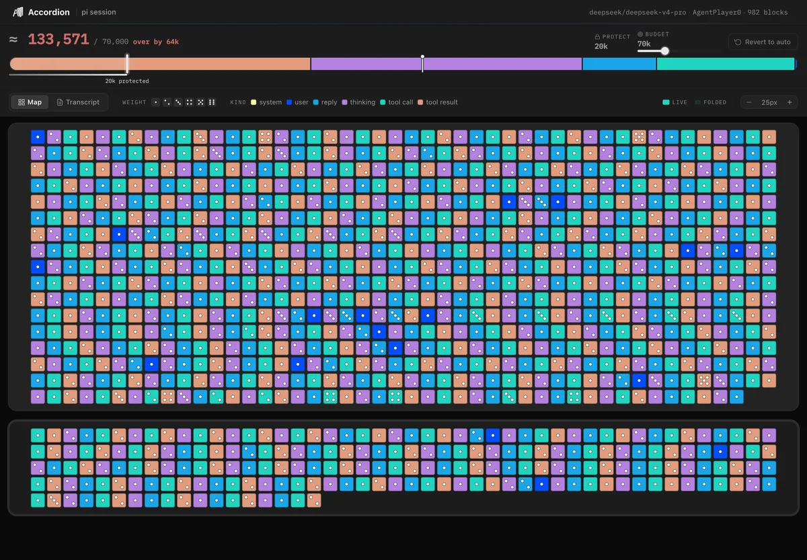
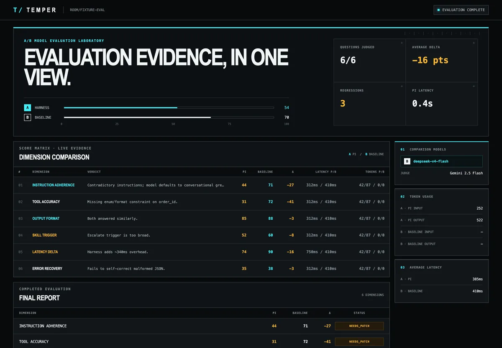
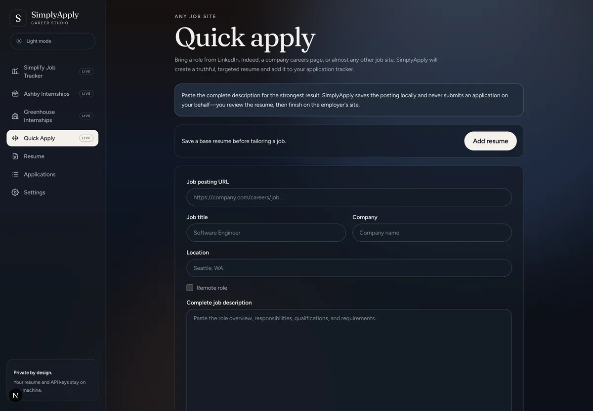
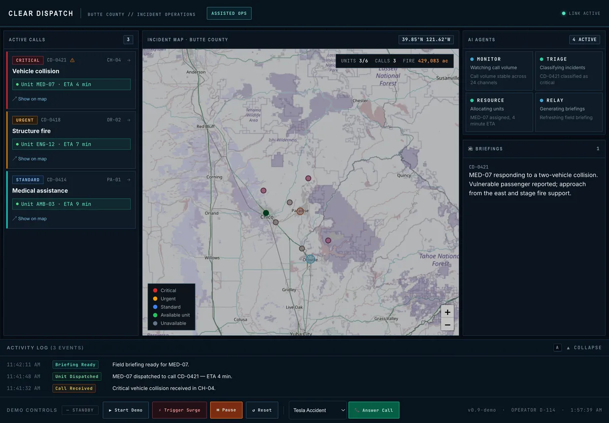
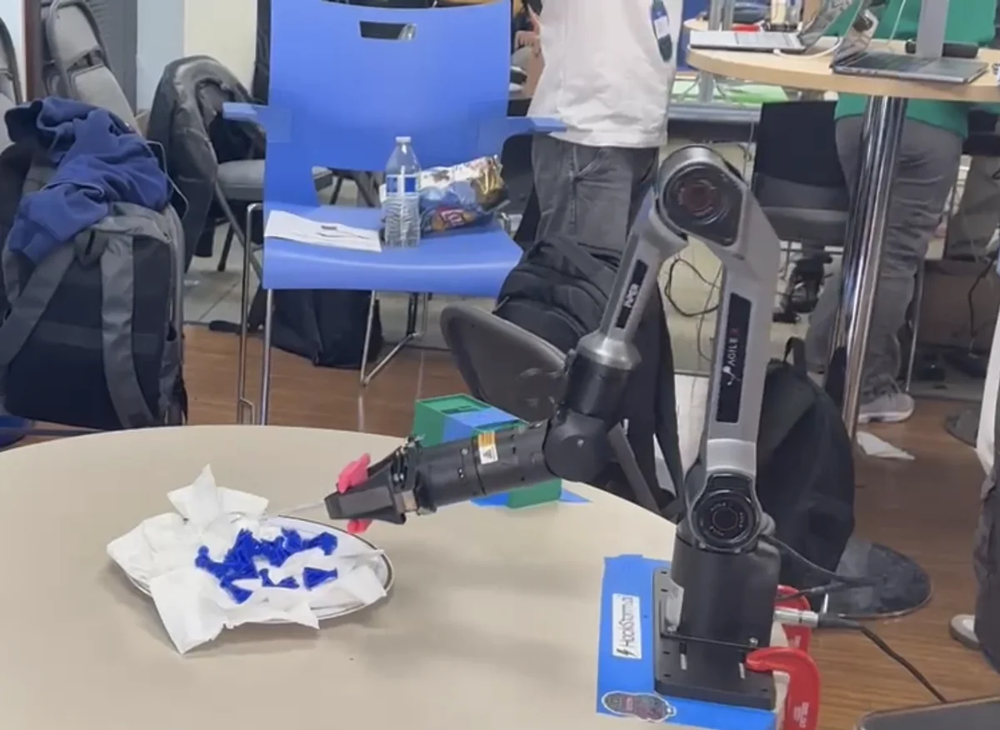
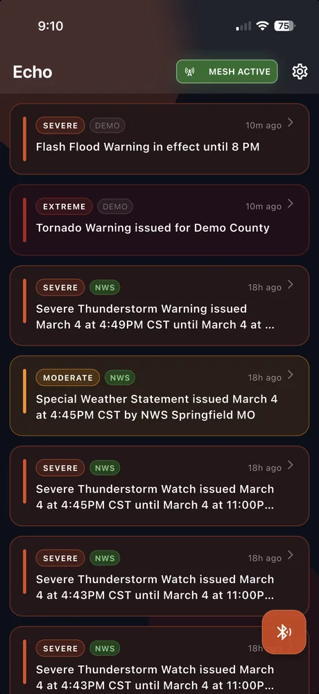
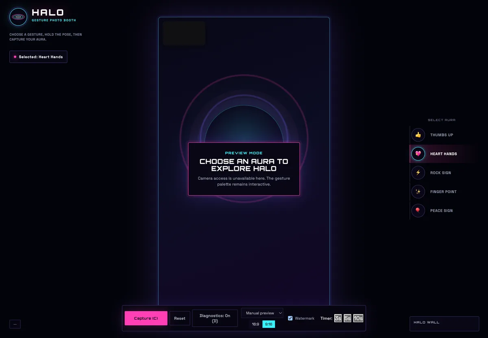
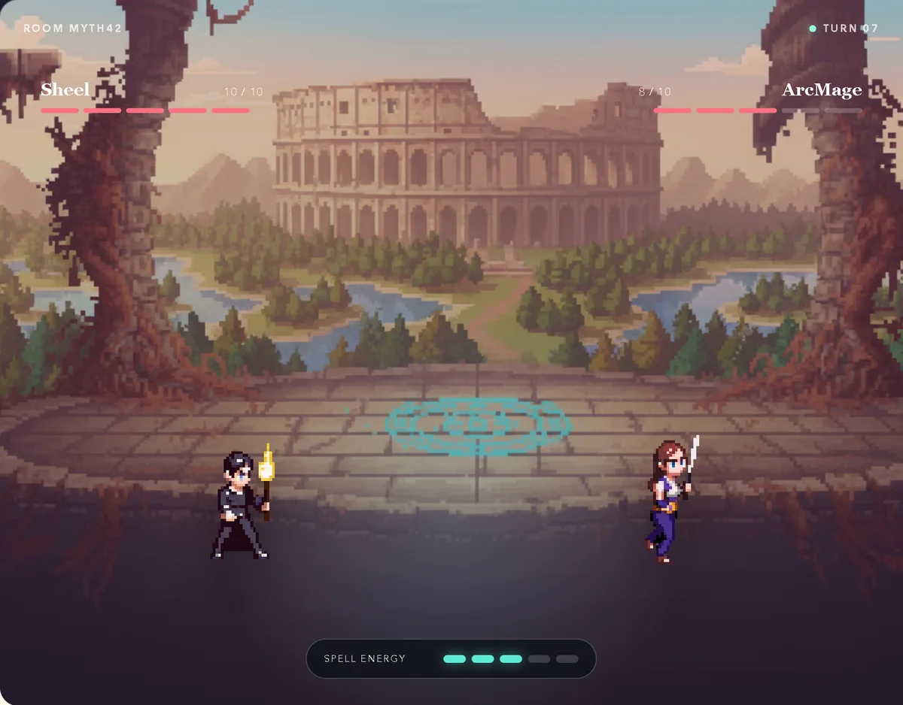

AccordionContext management for AI coding agents

Projects
Nine systems spanning AI infrastructure, real-time robotics, public safety, offline mesh networking, and product engineering.


Tests the full harness around a model, compares it with a bare-model baseline, then generates patches. Built the live dashboard and multi-session rooms and carried the work through four review rounds.
Tool accuracy 31 → 79 · adherence 44 → 82
Open-source internship tracking and tailoring with a code-enforced no-fabrication guardrail. Includes four LLM adapters, job-board connectors, ATS review, caching, and deterministic PDF/DOCX generation.
85 automated backend tests
Four coordinated AI agents monitor, triage, route, and brief behind a human dispatcher. Built the complete real-time operator dashboard, WebSocket state architecture, live call transcription, voice integration, mapping, and audit controls.
8 live message types · 8 vulnerability zones
Controls a Piper arm over CAN bus through a FastAPI state machine. Built macOS CAN support, the vision-to-arm bridge, Orbbec depth integration, and the 100Hz control loop required by the hardware.
macOS CAN stack built from scratch
Relays National Weather Service alerts from phone to phone over BLE with no internet after the first device receives an alert. Handles chunking, reassembly, SQLite persistence, deduplication, background scans, and multilingual rendering.
7 hops in under 3 seconds
Maps four hand and pose gestures to real-time canvas effects. Includes one-second gesture locking, fallback controls, DPR-safe capture, watermarked PNG export, shareable QR codes, and a live performance HUD.
Targets ~30 FPS at 720p
Converts lecture-note PDFs into head-to-head quiz battles. Built a canvas client, room-code WebSocket server, PDF question service, synchronized round logic, combat feedback, summary, and replay flow.
Runs Nextcloud, Immich, and Jellyfin on Proxmox with RAID/ZFS storage. Separates public and private ingress, adds a Tailscale-only FastAPI control plane, hotplug storage rules, and layered recovery procedures.